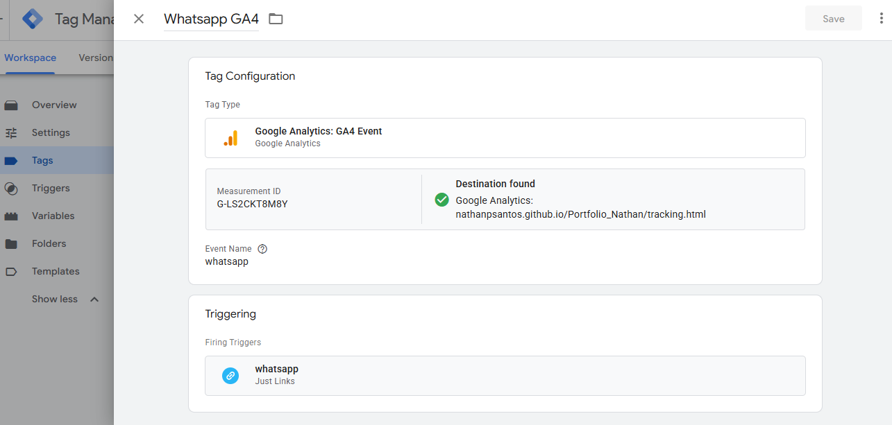
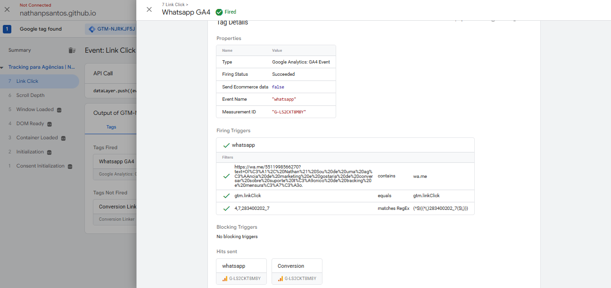
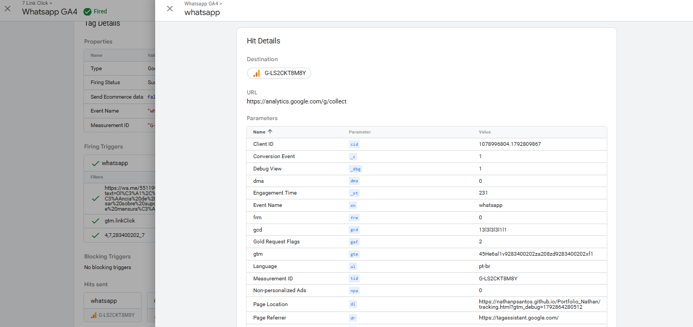
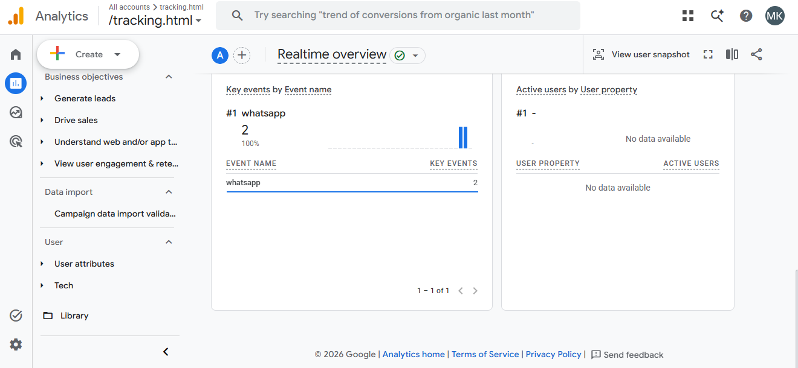

CASE TÉCNICO 01 · DEMONSTRAÇÃO PRÁTICA
Mensuração de cliques no WhatsApp com GTM + GA4
Implementação demonstrativa de um evento de clique em link de WhatsApp, com validação de disparo no Tag Assistant e contabilização no relatório em tempo real do Google Analytics 4.
Ambiente de teste · Não é projeto de clienteO desafio
Mensurar interações com um link de WhatsApp em uma página web. Sem rastreamento, o gestor não consegue observar essa etapa de intenção de contato nos relatórios de analytics.
Como foi implementado
- Instalação do contêiner do Google Tag Manager na página de demonstração.
- Configuração de acionador de clique em link, com condição relacionada ao destino do WhatsApp.
- Criação da tag de evento GA4, com nome de evento
whatsapp. - Execução do teste no Tag Assistant e inspeção do envio de requisição.
- Verificação de dois eventos principais
whatsappno relatório em tempo real do GA4.
Evidências reais do teste
As imagens abaixo foram fornecidas a partir da configuração e dos testes realizados. São capturas de ambiente demonstrativo; não representam resultados de campanhas de clientes.




O que foi validado — e o que não foi
Validado: disparo da tag, tentativa de envio ao endpoint de coleta do Analytics e contabilização de dois eventos principais no relatório em tempo real.
Não demonstrado: atribuição de campanhas, conversas efetivamente iniciadas, leads qualificados, vendas, ausência de duplicidade em cenários variados ou operação contínua em produção. A captura apresentada é do relatório em tempo real, não do DebugView.
Próximos aperfeiçoamentos: testar múltiplos botões, evitar disparos duplicados, revisar condições do acionador, documentar consentimento e considerar o nome mais explícito whatsapp_click em implementações futuras.
Aplicação para agências
A abordagem pode ser adaptada, mediante análise e autorização, a landing pages e sites de clientes para acompanhar cliques em canais de contato e apoiar a análise de campanhas. Clique não equivale a lead confirmado.
Sua agência precisa de suporte técnico em tracking?
Auditoria de eventos, configuração de GTM/GA4 e suporte white label com escopo definido.
Conversar sobre um projeto →